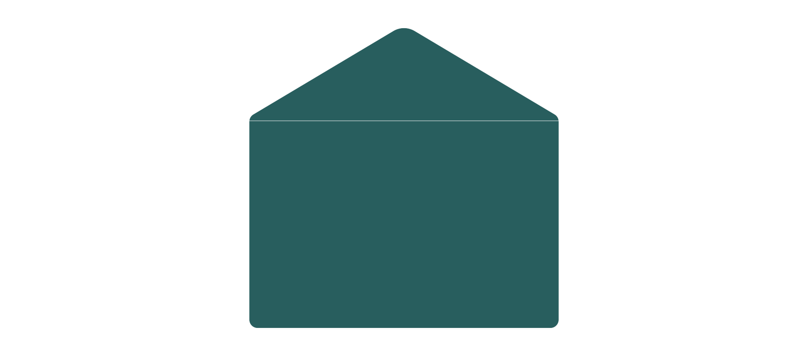
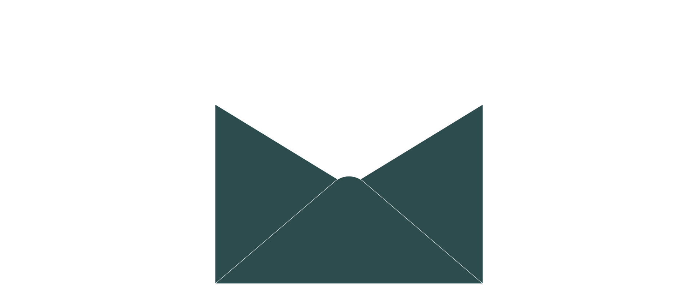

Young Queers ist eine Workshopreihe für queere und questioning Jugendliche, bei der Kreativität, Austausch und gemeinsames Ausprobieren im Mittelpunkt stehen. In kleinen Gruppen können die Teilnehmenden zum Beispiel Comics und Zines gestalten, schreiben, Theater spielen, Musik machen, Drag-Make-up ausprobieren, fotografieren oder an einem Selbstbehauptungstraining teilnehmen.
Welche Themen und Angebote stattfinden, wird gemeinsam mit den Jugendlichen entschieden und weiterentwickelt. die Die Workshopreihe soll einen sicheren Ort schaffen, an dem neue Freundschaften entstehen, eigene Interessen entdeckt und Selbstvertrauen gestärkt werden können. Das Projekt wurde von Edina Schlieter entwickelt, die die YOUNG QUEERS als pädagogische Fachkraft begleitet.
Gefördert von den Kiezhelden / FC St. Pauli von 1910 e.V.
Die mehrteilige Live Podcast-Reihe Kunst & Kampf beschäftigt sich mit dem Spannungsverhältnis von Künstler*innen und gesellschaftlichen Kämpfen. Die Reihe findet im Kulturhaus 73 in Hamburg statt und wird inhaltlich vom Schriftsteller und Journalisten Olivier David entwickelt und moderiert. Die verschiedenen Gäst*innen stehen in ihrer jeweiligen Kunst repräsentativ für drängende Fragen unserer Zeit: die gesellschaftlichen Implikationen psychischer Erkrankungen, der Kampf gegen Armut, Auseinandersetzung mit Sucht und Aktivismus und der Kampf um eine Stadt für alle.
Die Talks beleuchten den persönlichen und biografischen Zugang zu den jeweiligen Themen und versuchen aus den individuellen Werdegängen und künstlerischen Entscheidungen das allgemeingültig zu kondensieren.
Gefördert durch das Bezirksamt Hamburg-Altona.
Kon Peacy ist ein Kulturfloß, das im August 2026 als schwimmendes Archiv fünf Wochen lang entlang der Elbe von Dresden bis nach Hamburg reist. An verschiedenen Stationen entstehen Begegnungen mit Menschen vor Ort, aus denen nach und nach ein Archiv aus persönlichen Geschichten, Erinnerungen und Perspektiven wächst. Das Floß wird dabei zu einem offenen Begegnungsraum, in dem gemeinsames Kochen und Essen Menschen unkompliziert miteinander ins Gespräch bringt. Aus diesen Begegnungen entstehen Texte, Fotografien, Audioaufnahmen, Objekte und andere gemeinsame Arbeiten, die gesammelt und später in einer Ausstellung in Hamburg präsentiert werden.
Das Projekt versteht ein Archiv nicht als stillen Aufbewahrungsort, sondern als etwas Lebendiges, das durch Austausch und gemeinsame Erfahrungen entsteht. Entlang der Reise treffen unterschiedliche Lebensrealitäten und regionale Perspektiven aufeinander und werden miteinander verbunden. Ergänzt werden einzelne Stationen durch kleine Lesungen, Gespräche oder musikalische Beiträge, die den Austausch begleiten und vertiefen.
Konzeption und Umsetzung: Jeanie Brell, Làszlò Heeder, Sveon Schröder, Leander Spieß, Vincent Stirrenberg
Wir machen alles, was toll ist und toll finden wir vieles! Konzerte sind toll, Ausstellungen sind toll, Workshops sind toll. Und Theater und Performances und Urbane Gärten und Lesungen und Podcasts und Diskussionen. Und bestimmt noch viel mehr, an das wir alles nicht denken können. Denn wir möchten nicht nur unsere eigenen Ideen umsetzen, sondern uns vor allem auch mit Menschen verbünden, die selbst Ideen haben, aber Räume oder Finanzierung brauchen. Wir unterstützen euch dabei, entwickeln gerne zusammen ein Konzept und helfen bei der Beantragung von Fördermitteln für eure Ideen.
Dabei ist es wichtig, dass diese Ideen unseren Grundsätzen entsprechen: wir möchten Veranstaltungen und Formate realisieren, die Gemeinschaft schaffen, Bildung fördern, Debatten weiterbringen, besondere Zwecke unterstützen oder solidarische Werte vertreten. Als gemeinnütziger Verein orientieren wir uns nicht daran, dass die Projekte finanziellen Gewinn bringen, sondern daran, dass Möglichkeiten geschaffen werden und gemeinsam neue Dinge ausprobiert werden können.
toll und toll e.V. wurde 2025 von tollen Menschen gegründet und ist in Hamburg ansässig.
toll und toll e.V.
Spaldingstr. 45
20097 Hamburg
Vereinsregister: VR 25988
Registergericht: Amstgericht Hamburg
Vertreten durch:
Nils Lagoda und Donna Theil
Telefon: 015750628921
E-Mail:
Donna Theil
Donna Theil
Velvetyne für die kostenfreie Bereitstellung der tollen Schriftarten
Velvelyne von Mariel Nils, Manon Van der Borght, mit Unterstützung durch Raphaël Bastide, Benjamin Dumond. Vetrieben durch velvetyne.fr.
BianZhiDai von Xiaoyuan Gao, notyourtypefoundry. Auch vertrieben von velvetyne.fr.


